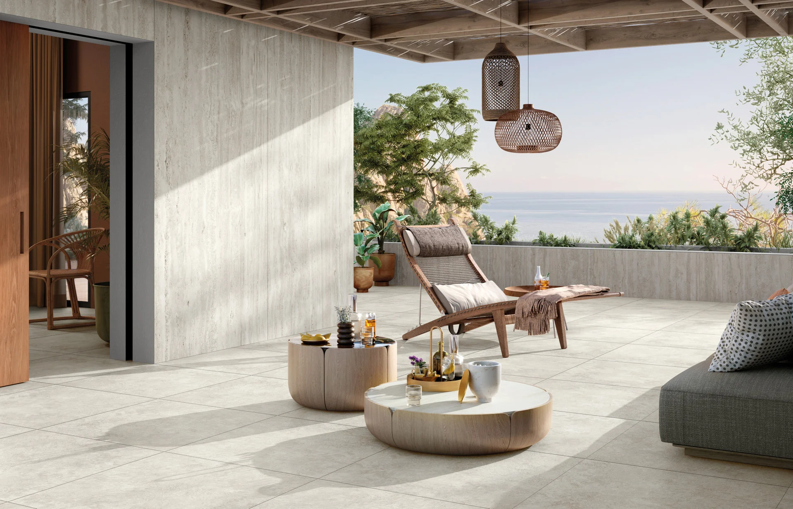

Aranżacja partnera / LibetElysian Travertini ↗01 / 07
Zobacz, co może zmienić Twoją przestrzeń
Cały wybór produktów ↗Nowości i dobry design.
Libet / Tarasy
Elysian Travertini
Jasny rysunek trawertynu, miękkie światło i spokojna elegancja. Gres, wokół którego zbudujesz własną strefę odpoczynku.
Szczegóły u partnera ↗SLABB / Ogrodzenia
Bloczki z betonu architektonicznego
Wyrazista rama dla nowoczesnej architektury. Betonowa powierzchnia, proste linie i dopracowane proporcje.
Szczegóły u partnera ↗SLABB / Ogrodzenia
Aluminiowe przęsła NIVE
Lekkie wizualnie, poziome przęsła zestawione z betonem. System prezentowany przez SLABB jako uzupełnienie bloczków ogrodzeniowych.
Szczegóły u partnera ↗Libet / Tarasy
Nau
Wygląd drewna w porcelanowym gresie. Ciepła podłoga wizualnie łączy taras z ogrodowym salonem.
Szczegóły u partnera ↗Libet / Tarasy
Glocal
Betonowa estetyka w gresie porcelanowym. Spokojne płaszczyzny podkreślają wodę, rośliny i geometrię przestrzeni.
Szczegóły u partnera ↗Libet / Ogrodzenia
Ogrodzenie Maxima
Prosta forma, mocny efekt. Połącz słupki i murek z materiałami użytymi wokół domu.
Szczegóły u partnera ↗LedBruk / Światło
LedBruk-Line ALU Oprawa liniowa 24V
Jedna linia światła, zupełnie inny wieczór. Podkreśl geometrię tarasu, ścieżek i wejścia do domu.
Szczegóły u partnera ↗Libet / Kostka
Imola Retta Colormix
Cztery formaty i przenikające się odcienie. Ułóż ścieżkę lub taras z wyrazistym, geometrycznym rytmem.
Szczegóły u partnera ↗Libet / Tarasy
Oudh
Rysunek inspirowany drewnem w otoczeniu bujnej zieleni. Dobry punkt wyjścia do przytulnej, naturalnej kompozycji.
Szczegóły u partnera ↗Drewbet / Ogrodzenia
CUBO GIGA
Pustak o długości 100 cm. Długie poziome linie porządkują ogrodzenie i podkreślają bryłę domu.
Szczegóły u partnera ↗LedBruk / Światło
LedBruk® Kostka Brukowa LED RGB+CCT
Światło zmienia ogród po zmroku. Podkreśl przebieg ścieżki i nadaj wieczorom własny nastrój.
Szczegóły u partnera ↗Drogbruk / Kostka
Primavera Lumino
Nadaj nawierzchni nowy charakter. Zestaw odcień z elewacją, zielenią i detalami swojego domu.
Szczegóły u partnera ↗Bozza / Tarasy
Novabell Norgestone
Kamienny charakter w ogrodowej aranżacji. Spójrz na taras jak na dodatkowy salon pod niebem.
Szczegóły u partnera ↗Drewbet / Ogrodzenia
Panele dwustronne Deska
Betonowe panele z rysunkiem deski. Osłoń strefę wypoczynku i nadaj granicy ogrodu jednolity, poziomy rytm.
Szczegóły u partnera ↗LedBruk / Światło
LedStone — świecący kamień
Świetlny akcent wśród zieleni. Wydobądź z ogrodu nastrój, którego nie widać za dnia.
Szczegóły u partnera ↗Libet / Tarasy
Dijon
Kamienny charakter i łagodne odcienie. Ustaw wygodną sofę, dodaj rośliny i pozwól wybrzmieć prostej formie.
Szczegóły u partnera ↗Drewbet / Ogrodzenia
Panele dwustronne Graf
Geometryczna faktura po obu stronach ogrodzenia. Wyraziste tło dla rabat, trawnika i miejsca spotkań.
Szczegóły u partnera ↗SLABB / Tarasy
Płyty z betonu architektonicznego
Taras, stopnie i ścieżka w jednym języku materiałów. Odkryj różne aranżacje surowego betonu wśród zieleni.
Szczegóły u partnera ↗POZBRUK / Tarasy
FREZO FRESCO
Zbuduj przestrzeń na długie poranki i spokojne wieczory. Zobacz, jak ten materiał odnajdzie się przy Twoim domu.
Szczegóły u partnera ↗Libet / Tarasy
Maxima XL
Duży format, spokojny rytm. Płyty, które nadają tarasowi zdecydowany, nowoczesny charakter.
Szczegóły u partnera ↗Libet / Tarasy
Monza
Taras w naturalnych odcieniach. Połącz prostą geometrię płyt z zielenią i miękkimi dodatkami.
Szczegóły u partnera ↗Libet / Tarasy
Kao
Drewniany rytm w ceramicznym wydaniu. Podłużny format nadaje strefie wypoczynku ciepły, uporządkowany wygląd.
Szczegóły u partnera ↗Libet / Tarasy
Motley
Taras wśród zieleni, z kamiennym rysunkiem pod stopami. Stwórz zaciszne miejsce na kawę i długie rozmowy.
Szczegóły u partnera ↗Libet / Tarasy
Elysian
Subtelne odcienie kamienia i oszczędna kompozycja. Płyty tworzą tło dla lekkich mebli i swobodnie rosnących traw.
Szczegóły u partnera ↗24 produktów · wybierz kierunek lub przesuń zdjęcia
Nowości producentów + Wybór Markin. Cenę i dostępność potwierdzimy dla Ciebie.